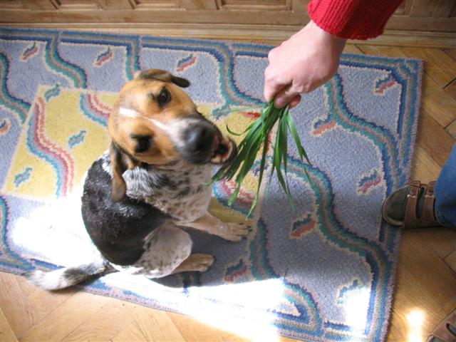
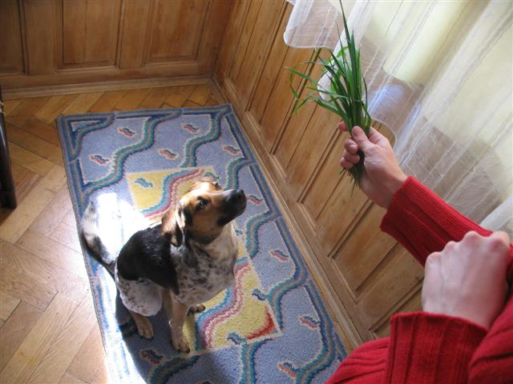
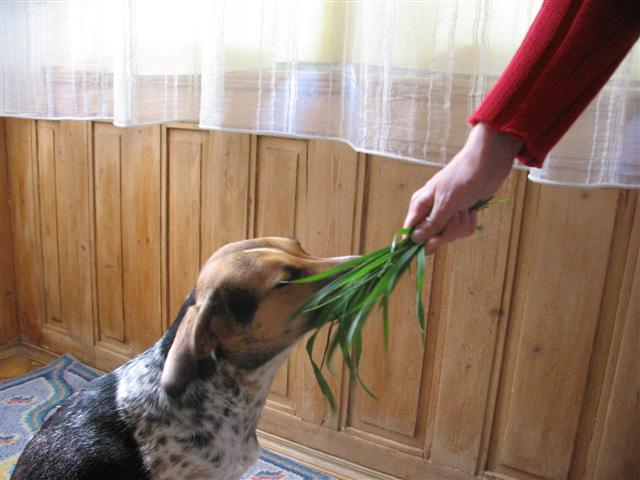
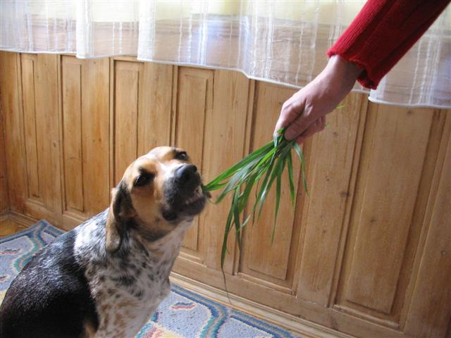
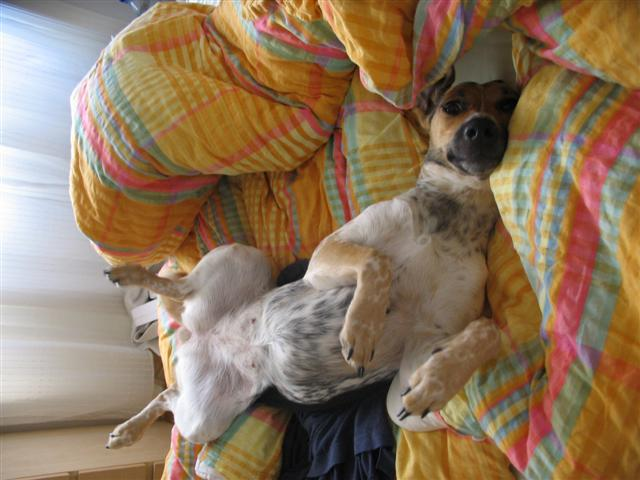
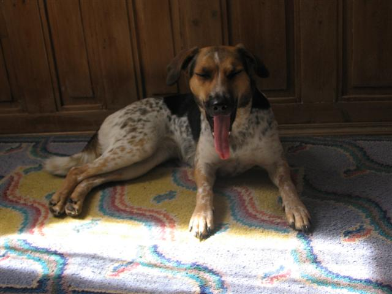
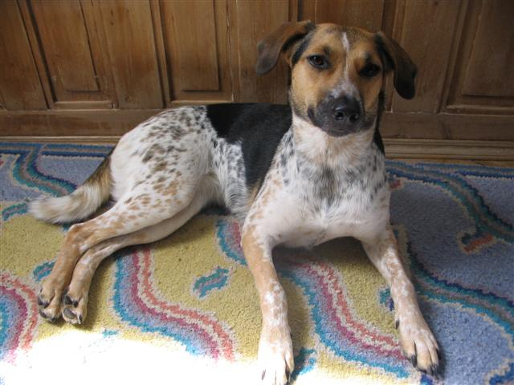

Navigace |
Máme doma vegetariánkuKlidně namítněte, že psi jsou přece všežravci, klidně si to i vygooglujte, ale realita je taková: NAŠE NELA SE PASE. Pravidelně, nejlépe denně, nejlépe obyčejnou trávu, ale není-li nepohrdne ani mou nuzně vypěstovanou bazalkou, a když není ani ta, tak sešere aspoň hlínu, co po ní zbyla. 
Určité indikátory toho, že Nela tíhne k zeleninové a ovocné stravě jsme měli odpočátků. Začalo to jablky k svačině, pokračovalo pomeranči (nejsu-li kyselé), mandarinkami, i to kiwi se zkusilo (teda Nela ho vyžebrala), hroznové víno se stalo velmi oblíbeným, švestky též, meruňky tím spíš, broskve a nektarinky samozřejmě! Co se týče zeleniny, jediné, co Nela úplně nemusí je obyčejný hlávkový salát, ovšem ledovým už nepohrdne, po ředkvičkách se může utlouct a taktéž po rajčatech, okurkách, paprikách, zelí, brokolici, květáku atd. (pravda lilek jsme ještě nezkoušeli a stejně tak ani cibuli či česnek). Zkrátka nevyvratilné empirické důkazy tu jsou a občasné výjimky je nevyvrátí.  Nela zcela soustředěná na blížící se pochoutku.
Někteří lidé, žijící v bludu psa masožravce, na to i doplatili... Nejedno jablko výletníků bylo ukořistěno i díky jejich chybnému předpokladu, že: "pes přeci jabka nežere". No, tímhle vyvracením stereotypů se teda moc nechlubím, protože ještě budeme muset na Nelině žravosti z jakýchkoli zdrojů hodně zapracovat.  Ňuchání ve stéblech trávy. Tudíž, není překvapením, že Nela se pase. Až si někdy říkám, jestli bychom se neměli přeřadit do Svazu chovatelů českého strakatého skotu nebo do králičí sekce Českého svazu chovatelů, kde mají tzv. Českého strakáče. Ostatně tihle další čeští strakatí mě trochu mátli, když jsem před třemi lety hledala další informace o tom plemeni, co si chceme pořídit. Skoro to vypadalo, že slovo český musí být nutně následováno slovem strakatý (takže do dalšího Sčítání lidu nesmím zapomenout, že národnost mám českou, strakatou:-) )
 Ovšem Nelino pasení nezná mezí! Minulý týden došlo tak daleko, že poté, co Nela prošacovala celou domácnost, jestli se nenajde něco zeléneho (z rostlin nám zůstaly jen tlustice, které Nela zatím nežere), pokusila se sežrat stalé zažloutlé osení a následně zblajzla a vyzvracela slušnou porci hlíny z květníku po kočičí trávě, kterou už dorazila pár dní před tím, jsme museli provést nouzovové vyhledání trávy v nebližším parku, aby se konečně mohl ten pes napást! Což není úplně jednoduché, vzhledem k tomu, že je tu docela sucho a tráva posekaná. Nakonec byl ale kýžený pýr nalezen a Nela svou náruživou degustací onoho travního trsu lákala pozornost kolemjdoucích a dokonce si vysloužila poznámku, že: "se pase jako kravička". No zkrátka další znejištění ohledně toho, co doma vlastně chováme:-) Pro tento týden jsme proto přijali prevntivní opatření. Maminka přivezla z chaty trávu čerstvou, nezatíženou pražským smogem, prostě kam se hrabou čerstvé ústřice. Psa pravidelně po ránu krmíme travou. Případně se obsluhuje Nela sama - jakmile otevřeme lednici, strčí hlavu dovnitř a začne se pást, protože samozřejmě, že aby tráva zůstala čerstvá, musí být uchována v lednici:-) Jen mě tak někdy napadá, jestli ten náš pes není NÁHODOU rozmazlenej:-) ?
 Tahle fotka by tu výše zmíněnou hypotézu možná mohla potvrdit:-)  Jen malý náznak toho, proč se snažím o zavedení soutěžní kategorie nejdelší jazyk:-)
 Tohle nazýváme krbový leh, tak akorát vhodný před krb:-)
|